5 niveles
De Iniciación a Experto, con desbloqueo secuencial y un examen por nivel.
Proyecto de portafolio · Kotlin Multiplatform
Aprende música desde cero
Aplicación nativa para niños y adultos: lecciones cortas, solfeos que suenan y un pentagrama dibujado a mano en Canvas. Android, iOS y escritorio desde un único código Kotlin, sin conexión y sin cuenta.
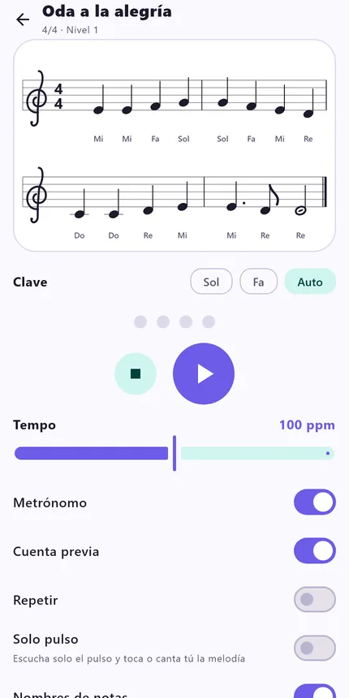
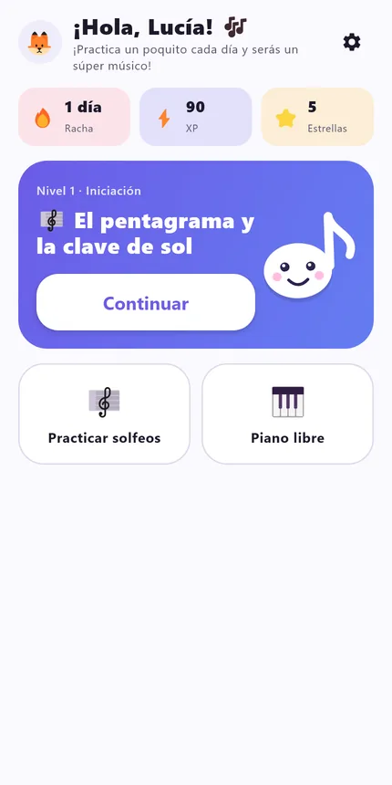
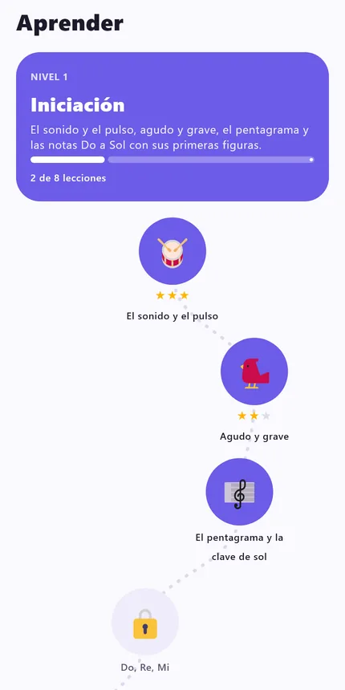
Funciones
De Iniciación a Experto, con desbloqueo secuencial y un examen por nivel.
Explicación, escucha, pregunta de opción múltiple, identificar nota, entrenamiento auditivo, piano y ritmo (tocar al compás).
Resaltado sincronizado con el audio, tempo 40–160, metrónomo, cuenta previa y repetición.
Botones grandes, color, mascota y confeti, o un estilo más sobrio.
Tres idiomas y nombres de nota a elección: Do Re Mi o C D E.
Sol, Fa o recomendada según tu instrumento; las melodías se reescriben a la clave elegida.
1–3 estrellas por precisión, racha diaria e insignia al aprobar cada examen.
Sin backend: el progreso se guarda en el dispositivo, con perfiles locales.
Pruébalo aquí
Primera frase de la «Oda a la alegría» (dominio público), con un pentagrama dibujado en SVG y audio con Web Audio. La nota actual se resalta en sincronía con el reloj de audio.
Esta demo usa osciladores de Web Audio. La app real usa su propio sintetizador Kotlin con precisión de muestra, común a las tres plataformas.
Ruta de aprendizaje
El sonido y el pulso · Agudo y grave · El pentagrama y la clave de sol · Do, Re, Mi · Fa y Sol · Redonda, blanca y negra · Primeras melodías
La clave de sol · Notas Do a Do · Los silencios · Compases y barras · Líneas adicionales · El teclado del piano · Leer melodías sencillas
Corcheas y su silencio · Puntillo y ligadura · Sostenidos y bemoles · Tonos y semitonos · Escala de Do mayor · Intervalos simples
La clave de fa · Escalas mayores y armaduras · Escalas menores · Semicorcheas · Tríadas · Dinámica · Tempo y carácter
Compás compuesto 6/8 · Síncopa y contratiempo · Intervalos con cualidad · Acordes de séptima · Funciones I–IV–V–I · Modos griegos · Transposición
Capturas reales
Renders reales de la interfaz Compose generados por los tests fuera de pantalla (datos de ejemplo; textos en español).
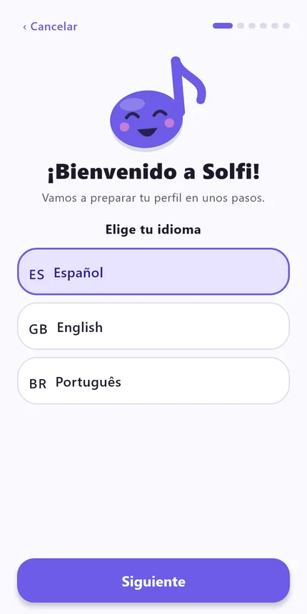
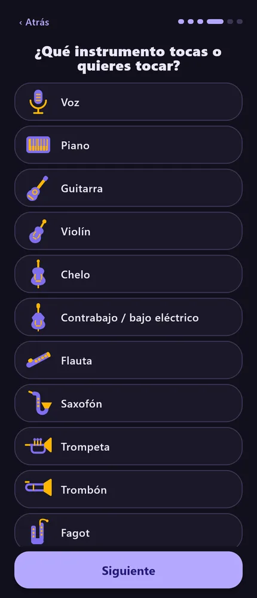
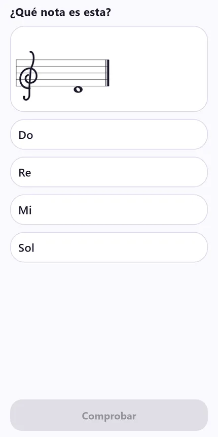
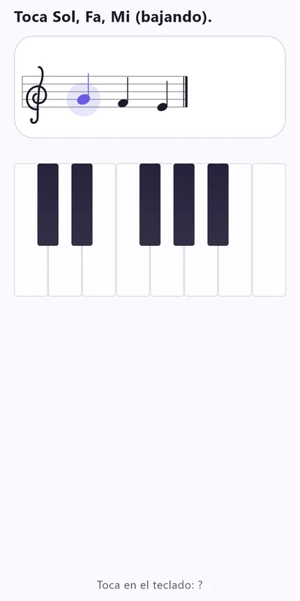
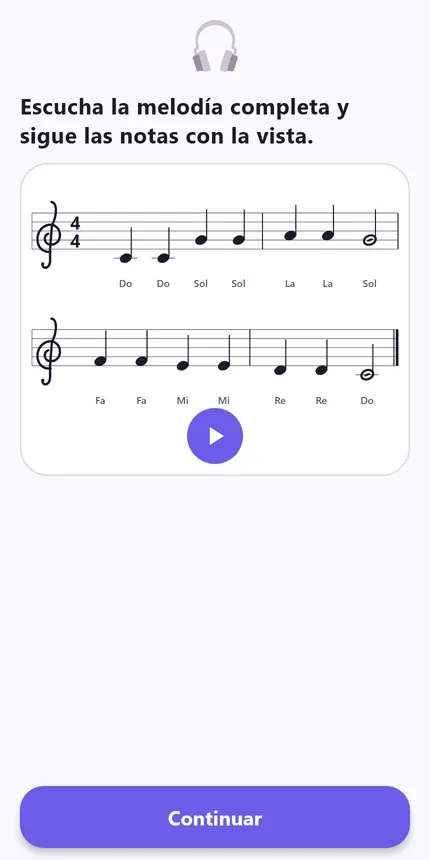
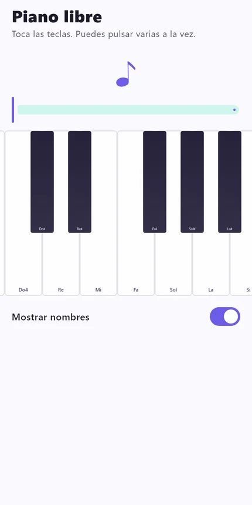
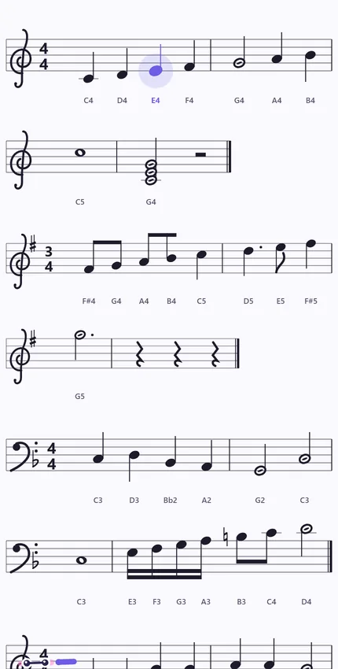
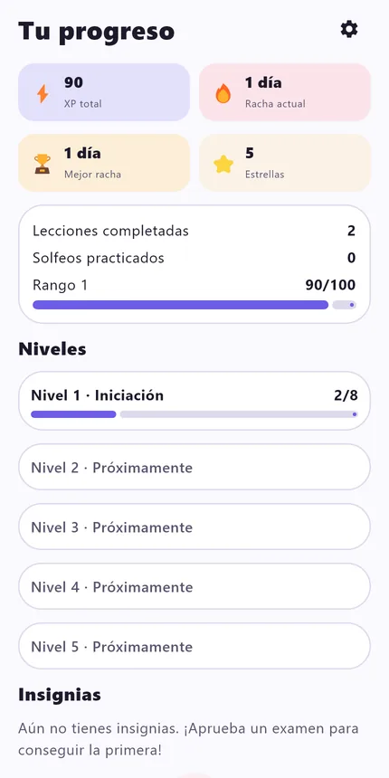
Inmersión técnica
Casi todo vive en commonMain. Cada plataforma solo aporta lo que no se puede compartir, mediante expect/actual.
Voz tipo piano con armónicos y ADSR, polifonía y metrónomo, a 44,1 kHz mono. El secuenciador agenda con precisión de muestra y el reloj de audio (frames reproducidos) alimenta el resaltado de la UI y la puntuación del ritmo.
Claves de sol y fa como curvas Bézier, barras, ligaduras, líneas adicionales, alteraciones, puntillos y silencios, sin dependencias externas.
Las melodías se escriben como texto: "C4:q D4:q E4:h | r:q". Un parser las convierte en eventos para el pentagrama y el sintetizador.
Los textos son una interfaz Kotlin (Strings) con una implementación por idioma: si falta una clave, no compila.
Cada nivel es un JSON (kotlinx.serialization) comprobado por un validador. Añadir un nivel no toca código.
Al cambiar de clave, la melodía se desplaza por octavas enteras minimizando líneas adicionales; los nombres de nota no cambian. clefLocked fija la clave cuando la lección habla del pentagrama.
Teoría, audio, claves, progreso, textos, contenido y renders fuera de pantalla de las pantallas, todos en verde con desktopTest.
// level1.json · «Oda a la alegría»
{ "clef": "treble", "time": "4/4",
"key": "C", "tempo": 100,
"notes": "E4:q E4:q F4:q G4:q |
G4:q F4:q E4:q D4:q |
C4:q C4:q D4:q E4:q |
E4:q. D4:8 D4:h" }// commonMain
expect class KeyValueStore(name: String) {
fun getString(key: String): String?
fun putString(key: String, value: String)
}
// desktopMain
actual class KeyValueStore actual constructor(name: String) {
private val prefs: Preferences =
Preferences.userRoot().node("com/solfi/app/$name")
// ...
}/** Octave shift that best fits [pitches] on [target]: fewest total ledger lines. */
fun ledgerLines(diatonic: Int, clef: Clef): Int {
val pos = diatonic - clef.bottomLineDiatonic
return when {
pos < 0 -> (-pos) / 2
pos > 8 -> (pos - 8) / 2
else -> 0
}
}